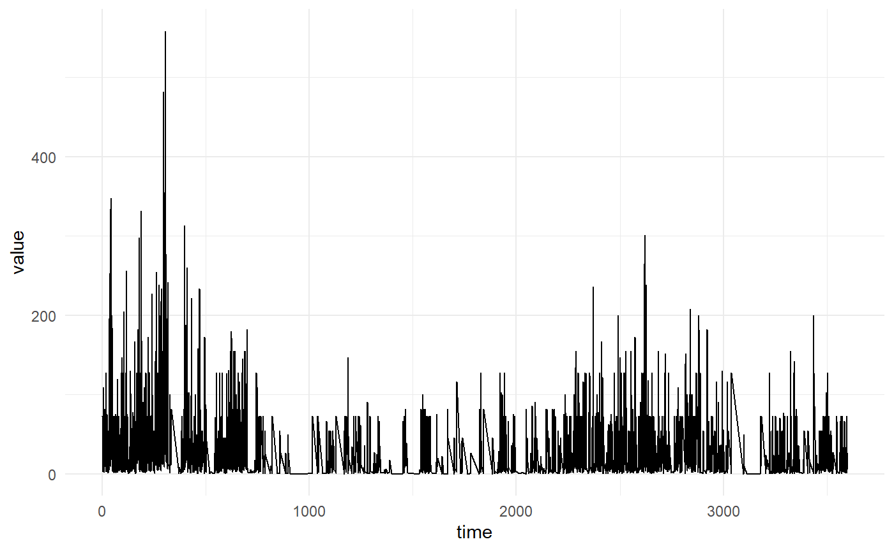
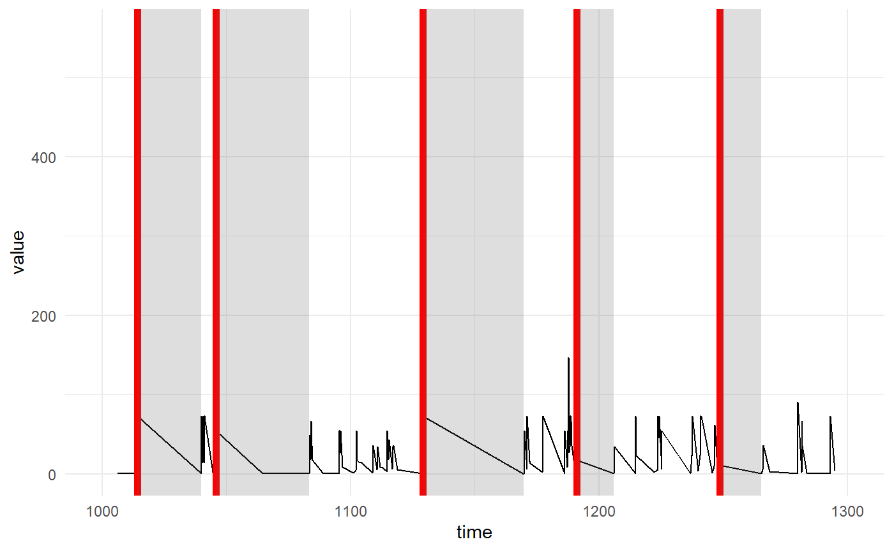
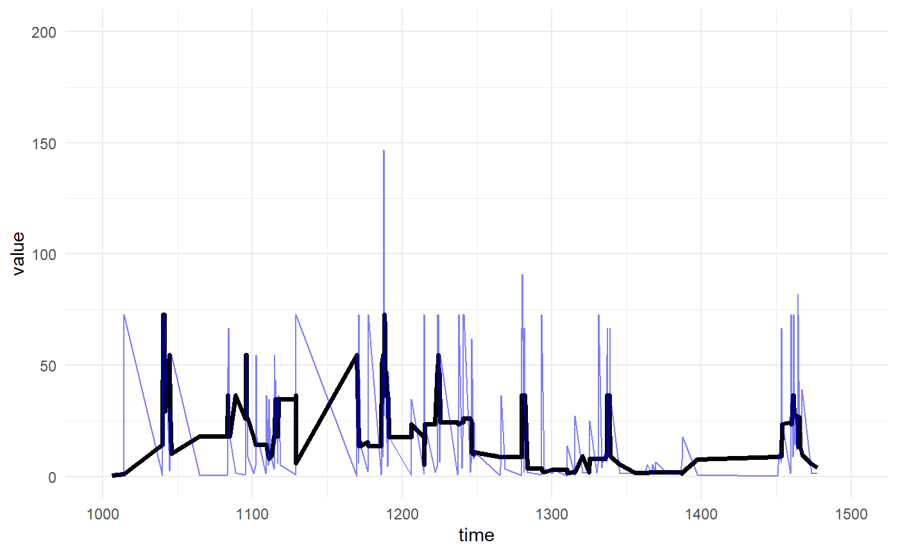
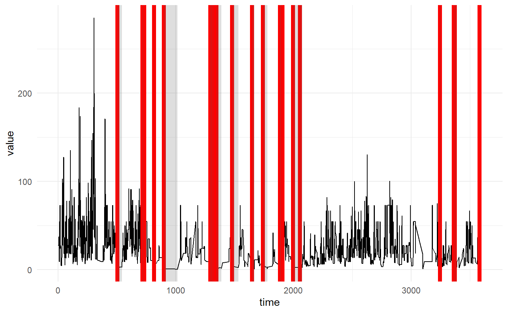
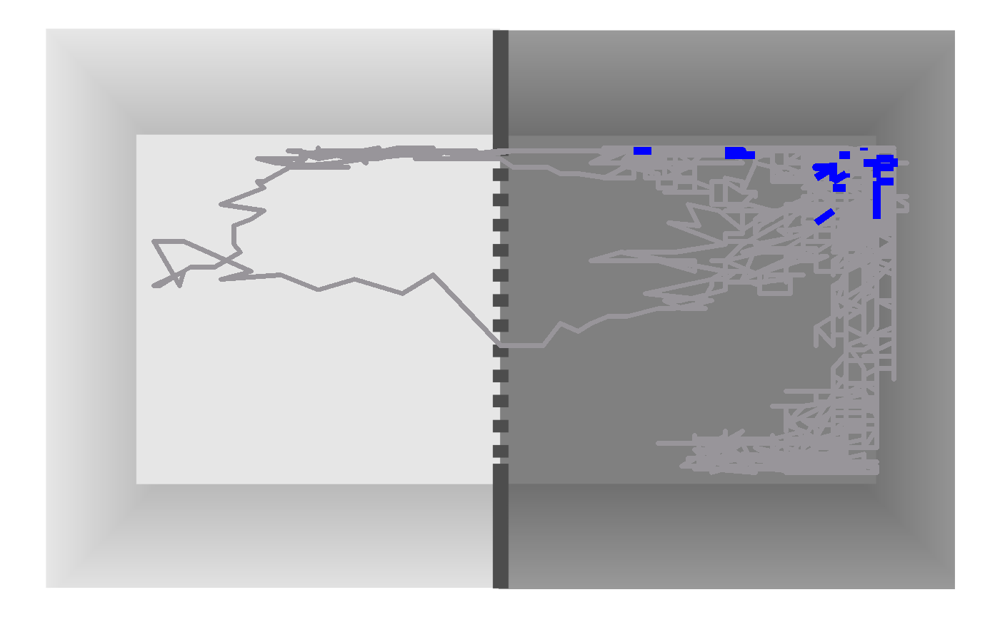
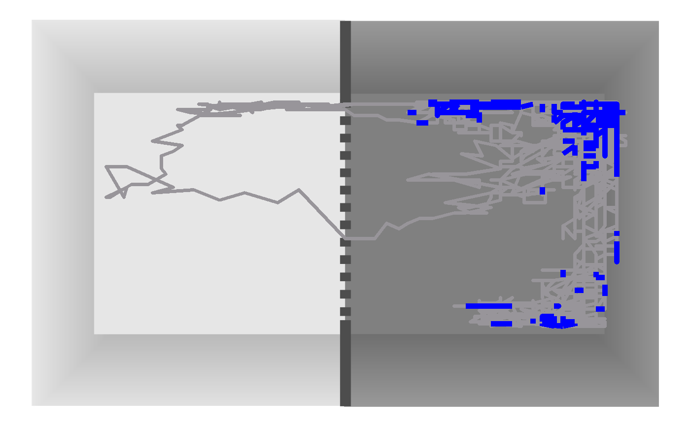

Freezing
freezing.Rmdlibrary(fgu.avoidance)
#> Loading required package: navr
#> Loading required package: ggplot2
#> Warning: package 'ggplot2' was built under R version 3.6.3
animals <- load_data(file.path("..", "inst", "extdata", "run", "three-animals.csv"))
animal <- animals$animal_8Freezes search
Firstly we have to look at the speed the animal makes

it is evident that the speed kinda jumps around, in some occasions even jumping above 400 units. There are many preprocessing elements which we can do to smooth or fix things up. Please see the package navr for some deeper ideas about speed cleaning and searching for movement stops and onsets. In this vignette, we will only cover the basics
Let’s search for all freezings of at least 2s, which don’t overcome the speed 0.5. The speed above 0 is NECESSARY, because of how the mechanism actually records animal’s position. The device does NOT record consecutively, but only records changes in position. Therefore each two recordings will be from different positions and therefore there will always be some distance traveled and speed above 0.
freezes <- collect_freezes(animal, speed_threshold = 0.5, min_duration = 2)
str(freezes)
#> List of 3
#> $ time : num [1:38] 332 520 778 786 822 ...
#> $ time_since_start: num [1:38] 332 520 778 786 822 ...
#> $ duration : num [1:38] 38.53 15.9 7.17 24.3 23.75 ...So we have found 38 instances of animal freezing. Let’s visualise them
plot_speed(animal) +
geom_navr_timeseries_events(freezes$time_since_start, durations = freezes$duration, color="red", size= 2) +
xlim(1000,1300)
#> Warning: Removed 4012 row(s) containing missing values (geom_path).
#> Warning: Removed 33 rows containing missing values (geom_vline).
#> Warning: Removed 33 rows containing missing values (geom_rect).
We can also plot the positions of the animal during those times of
freezes_times <- rbind(freezes$time, freezes$time+freezes$duration)
plot_path(animal) +
geom_navr_path_events(animal$position, freezes_times)
Speed smoothing
The speed smoothing is optional and unwanted in some situations, but it allows to smooth out some jittery movement in too short times. E.g. if the animal moves 1cm, but because of the recording fault, it moves in 0.001s (say the two recordings were made by erro quite fast one after another), this speed will look like a speed of 10ms/s, although it is just a small step but measured in too short time.
Speed smoothing or position smoothing can solve some of these issues, although it creates potential trouble with smoothing out onsets and potentially removing some freezing period.
The balck line represents the median smoothed value, the blue is the original speed
animal_smooothed <- smooth_speed(animal, type="median", points=7)
#> Warning in smooth_vector(obj$data$speed, type, ...): There are NAs in the
#> vector, replacing with last known value
plot_speed(animal_smooothed, size=1.25) +
geom_navr_obj_timeseries(animal$position, "speed", color="blue", alpha = 0.5) +
xlim(1000,1500) + ylim(0,200)
#> Warning: Removed 3942 row(s) containing missing values (geom_path).
#> Warning: Removed 3942 row(s) containing missing values (geom_path). Because the speeds are smoothed, we need to increase the threshold for the stopping
freezes <- collect_freezes(animal_smooothed, speed_threshold = 3, min_duration = 2)
plot_speed(animal_smooothed) +
geom_navr_timeseries_events(freezes$time_since_start, durations = freezes$duration, color="red", size= 2)
Speed selection
Speed selection for freeze onset is also quite individual, depending on the current paradigm and especially frequency of recording. If the frequency is quite high, we are runnign into trouble with weird peaks, if too low, then we can have long periods of “nothing”.
All in all, the speed needs to be selected per paradigm basis, investigated individually and corrected for potential outliers.
freezes <- collect_freezes(animal, speed_threshold = 0.5, min_duration = 2)
freezes_times <- rbind(freezes$time, freezes$time+freezes$duration)
plot_path(animal) +
geom_navr_path_events(animal$position, freezes_times)
If we set the speed limit to 5, we will find much more
freezes <- collect_freezes(animal, speed_threshold = 5, min_duration = 2)
freezes_times <- rbind(freezes$time, freezes$time+freezes$duration)
plot_path(animal) +
geom_navr_path_events(animal$position, freezes_times)